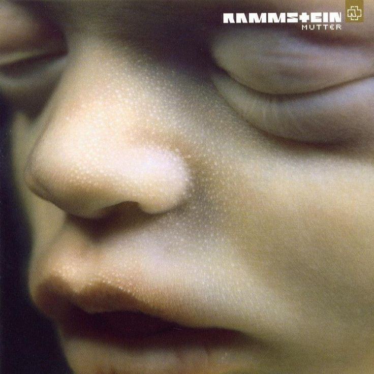
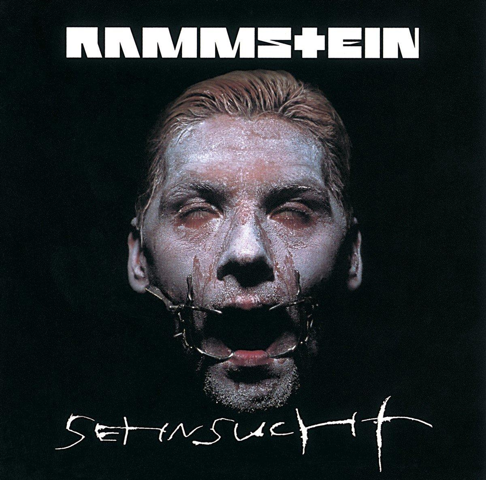

RAMMSTEIN
A German industrial metal band formed in Berlin in 1994.
Till Lindemann. Richard Kruspe. Paul Landers. Oliver Riedel. Christoph Schneider. Christian Lorenz.
A German industrial metal band formed in Berlin in 1994.
Till Lindemann. Richard Kruspe. Paul Landers. Oliver Riedel. Christoph Schneider. Christian Lorenz.

MUTTER
2001

SEHNSUCHT
1997
REISE, REISE
2004
LIEBE IST FÜR ALLE DA
2009
ZEIT
2022